Questão 1 · Sensibilidade · Valor Preditivo Positivo · Especif icidade · 4000185979Um laboratório brasileiro desenvolveu um teste que permite o diagnóstico de infecção aguda por monkeypox a partir do soro do paciente. Para tal, coletou de forma pareada, detecção de genoma por PCR de vesículas suspeitas e amostras de sangue de 100 pacientes. O resultado encontra-se na tabela abaixo: Pode-se afirmar, em relação ao estudo realizado:

A A prevalência da doença na população estudada foi de 60%.
B Neste estudo o valor preditivo positivo é maior que o valor preditivo negativo.
C O teste é mais sensível do que específico.
D A utilização de amostras distintas (sangue versus lesão) inviabiliza a interpretação de performance do teste.
E A sensibilidade do teste coincide com o valor preditivo positivo nesta amostra.
Questão 2 · Saúde Suplementar · 4000185977No âmbito da Saúde Suplementar, a pessoa jurídica de direito privado de ns não econômicos, constituída sob forma de associação ou fundação, que opera plano privado de assistência à saúde aos integrantes de determinada categoria profissional que sejam seus associados, é caracterizada como:
A Plano coletivo por adesão.
B Cooperativa de saúde.
C Plano coletivo empresarial.
D Auto-gestão.
E Seguro saúde.
Questão 3 · Metanálises e Revisões sistemáticas · Metanálises · 4000185976Em 2022, Benites-Zapata publicou um artigo onde avalia os 12 artigos previamente publicados acerca das manifestações clínicas da infecção por Monkeypox. Dentre os achados, a presença de rash cutâneo está entre os sintomas mais comuns (93%) e a diarreia entre os menos comuns (4%), conforme ilustrada na tabela abaixo: Qual é o tipo de estudo que melhor descreve este trabalho conduzido por Benites-Zapata?

A Revisão sistemática.
B Série de casos.
C Estudo de prevalência.
D Coorte retrospectiva.
E Meta-análise.
Questão 4 · Princípios e Diretrizes do SUS na Lei n 80801990 · Princípios e Diretrizes do SUS na Constituição Federal · 4000185975Durante a pandemia de SARS-CoV-2, qual foi o princípio do sistema de saúde que garantiu que todas as necessidades dos cidadãos brasileiros fossem atendidas por completo, desde demandas mais simples até as mais complexas, desde o esforço de vacinação até o suporte em UTI em hospital de referência?
A Universalidade.
B Descentralização.
C Integridade.
D Hierarquização.
E Equidade.
Questão 5 · Lista Nacional de Notif icação Compulsória de doenças agravos e eventos de saúde pública · 4000185973Em relação às doenças e agravos de noti cação compulsória, qual das alternativas abaixo corresponde a doença ou agravo que só deve ser notificada após a sua confirmação diagnóstica?
A Dengue.
B Hanseníase.
C Febre maculosa.
D Febre tifoide.
E Leptospirose.
Questão 6 · Declaração de óbito DO Atestado de óbito · 4000185972Homem de 72 anos de idade está internado para tratamento antibiótico de broncopneumonia. No terceiro dia de internação, por piora do quadro clínico e laboratorial, é transferido à unidade de terapia intensiva para melhor controle clínico e expansão do espectro antibiótico. Apesar das medidas implementadas, o paciente desenvolve hipotensão refratária a altas doses de drogas vasoativas e evolui a óbito. O paciente apresentava antecedentes de câncer de próstata em tratamento com hormonioterapia, doença pulmonar obstrutiva crônica e diabetes mellitus. Como deve ser preenchida a primeira linha da Parte I do Atestado de Óbito?
A Disfunção de múltiplos órgãos.
B Choque Séptico.
C Broncopneumonia.
D Câncer de próstata.
E Efeitos adversos de outras drogas.
Questão 7 · Curva ROC · 4000185971Estudo avaliou a possibilidade de se utilizar as medidas de sinais vitais de pacientes internados para predizer a ocorrência de sepse durante a internação. Diversos modelos matemáticos foram testados e as medidas efetuadas foram reproduzidas no gráfico abaixo: Qual foi o modelo de melhor performance para triagem de sepse em pacientes internados?
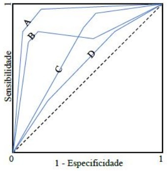
A A.
B B.
C C.
D D.
E Não é possível determinar a partir destes dados.
Questão 8 · Prevenção Terciária · 4000185969Considerando os níveis de prevenção em Saúde, qual das ações abaixo corresponde a uma estratégia de prevenção terciária?
A Uso de estatina em dose alta em indivíduo pós-infarto.
B Medidas de cessação de tabagismo em indivíduos saudáveis.
C Cuidados paliativos em paciente com câncer terminal.
D Prevenção de burnout de profissionais de saúde e cuidadores.
E Imobilização de membro inferior em paciente com neuroartropatia de Charcot.
Questão 9 · Lei n 80801990 · 4000185968Em relação à Lei Orgânica da Saúde, qual das alternativas abaixo caracteriza uma atribuição comum das três esferas de governo (União, Estados e Municípios)?
A Elaboração de normas técnico-científicas de promoção, proteção e recuperação da saúde.
B Formular, avaliar e apoiar políticas de alimentação e nutrição.
C Coordenar e participar na execução das ações de Vigilância Epidemiológica.
D Acompanhar, controlar e avaliar as redes hierarquizadas do Sistema Único de Saúde.
E Participar da execução, controle e avaliação das ações referentes às condições e aos ambientes de trabalho.
Questão 10 · Prof ilaxia préexposição PrEP · 4000185967A Pro laxia Pré-Exposição ao HIV se mostrou e caz e segura e é oferecida hoje pelo Sistema Único de Saúde. Em que consiste esta estratégia?
A Tenofovir e dolutegravir em dose única, 2 horas antes de relação de risco.
B Tenofovir, lamivudina e dolutegravir por 28 dias após relação de risco.
C Ribavirina para pacientes HIV positivos e exposição ao vírus hepatite C.
D Tenofovir e entricitabina em dose fixa e contínua.
E Boost de tenofovir em pacientes HIV positivos antes de relação de risco.
Questão 11 · Critérios de elegibilidade da OMS · Tabela dos critérios de elegibilidade OMS · 4000185966Paciente, 23 anos, com diagnóstico de mutação de fator V de Leiden. Qual é o método contraceptivo mais adequado?
A Injetável mensal combinado.
B Injetável progestagênio.
C Anel vaginal.
D Contraceptivo oral combinado.
E Adesivo dérmico.
Questão 12 · Ultrassonograf ia · Exames complementares · 4000185965Paciente, 19 anos, refere cólica menstrual intensa com início 2 dias pré-menstrual e se estende por 5 dias de uxo. Ciclos menstruais regulares e mensais. Uso de preservativo como contracepção. Nuligesta. Nega alterações de hábito intestinal e urinário. Sem outras comorbidades. Ao exame de toque vaginal apresenta útero retrovertido e xo, com regiões anexiais livres. Considerando a principal hipótese diagnóstica, qual o exame mais sensível para avaliação de comprometimento intestinal?
A Colonoscopia com preparo intestinal
B Enema opaco com preparo intestinal
C Tomografia computadorizada com contraste
D Trânsito intestinal com contraste
E Ultrassom transvaginal com preparo intestinal.
Questão 13 · Tratamento das pacientes adultas · Tratamento das mulheres que não desejam engravidar · 4000185963Fisiopatologia Paciente, 19 anos, refere acne e oleosidade da pele com ciclos menstruais irregulares. Inicia uso de pílula contraceptiva oral combinada. Qual dos efeitos laboratoriais é esperado?
A Elevação da fração livre de testosterona.
B Redução da relação FSH/LH.
C Elevação de globulina transportadora de esteroide.
D Manutenção dos níveis de estradiol.
E Elevação da progesterona.
Questão 14 · Dor mamária mastalgia · Descarga papilar · 4000185962Paciente, 32 anos, ciclos menstruais regulares, uso de preservativo como contracepção. Mãe falecida de câncer de mama aos 72 anos de idade. Refere dor mamária bilateral que antecede a menstruação em cerca de 5 dias. Ao exame clínico das mamas não se observam tumorações ou achados axilares. A expressão mamilar revela saída multiori cial de líquido amarelado em pequena quantidade por ambos os mamilos. Qual é a conduta mais adequada neste momento?
A Mamografia digital.
B Tranquilizar com seguimento clínico anual.
C Citologia do líquido.
D Ultrassonografia.
E Ressonância magnética das mamas.
Questão 15 · Populaçãoalvo e intervalo · Coleta da colpocitologia oncótica · 4000185961Paciente, 60 anos, faz coleta de citologia para Papanicolaou como rastreamento. O resultado foi insatisfatório por escassez celular. Qual é a alternativa para esta paciente?
A Estradiol vaginal e repetir exame.
B Cirurgia de alta frequência.
C Curetagem de canal cervical.
D Colposcopia.
E Progesterona vaginal e repetir o exame.
Questão 16 · Cardiopatias na gestação · 4000185960Paciente com 35 anos, primigesta, gemelar dicoriônico, 29 semanas, diagnóstico de diabetes gestacional na avaliação de primeiro trimestre controlado com dieta, procura pronto atendimento com queixa de cólicas frequentes. Após avaliação foi diagnosticado trabalho de parto prematuro inibível. Fetos com vitalidade normal, optou-se pela inibição de trabalho de parto. Como medida inicial foi administrado levomepromazina e hidratação endovenosa, sem sucesso, seguindo-se inibição com terbutalina endovenosa. Realizada administração de corticoterapia para maturação pulmonar e sulfato de magnésio para neuroproteção. Urocultura negativa. Durante o terceiro dia de internação paciente apresenta queixa importante de dispneia ao repouso necessitando de suporte respiratório. Teste de antígeno para COVID-19 negativo. A ausculta pulmonar apresentava murmúrios vesiculares presentes com estertores crepitantes bilateralmente poupando somente os ápices pulmonares. A ausculta cardíaca apresentava bulhas rítmicas normofonéticas, com sopro sistólico ejetivo principalmente em bordo esternal esquerdo. Quais são a etiologia mais provável, a investigação e o tratamento propostos para o caso?
A Tromboembolismo pulmonar, angiotomografia, ateplase.
B Estenose mitral, ecocardiograma, furosemida e beta bloqueador.
C Miocardite periparto, ecocardiograma, corticoterapia.
D Síndrome angústia respiratória por COVID, tomografia de tórax, corticoterapia.
E Edema agudo de pulmão, raio X de tórax, furosemida.
Questão 17 · Artéria cerebral média ACM · Vasos estudados · Dopplervelocimetria Doppler · 4000185959Primigesta, 42 anos, idade gestacional de 36 semanas e 1 dia, sem comorbidades prévias, assintomática, exame clínico sem alterações. Realizou ultrassonogra a obstétrica com doppler uxometria por queda no crescimento da altura uterina nas últimas semanas. Feto único, vivo, apresentação cefálica, sem mal formações visíveis, peso estimado fetal de 2.100g, percentil 3, índice de líquido amniótico = 2,7cm; movimento respiratório presente, doppler demonstrado abaixo: Valores referência para idade gestacional: Umbilical PI: 0,69 a 1,09 – Umbilical A/B: 1,40 a 3,75 ACM PI: 1,42 a 2,04 ; Quando devemos considerar a realização do parto?
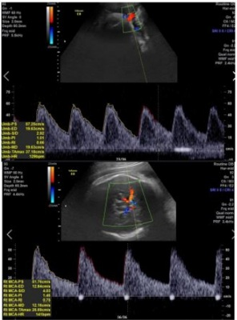
A Durante o termo tardio visto a ausência de comorbidades da paciente.
B Com 37 semanas visto o diagnóstico ultrassonográfico.
C Resolução imediata frente ao risco de insuficiência placentária crônica.
D Resolução após corticoterapia para maturação pulmonar.
E Resolução com 40 semanas a fim de se evitar pós-datismo.
Questão 18 · Métodos de alivio da dor no parto · 4000185957Paciente interna em trabalho de parto em fase ativa. Apresenta muita dor durante a contração e pergunta se pode receber analgesia pois não está aguentando. Qual é a afirmativa correta relacionada a analgesia de parto?
A A analgesia pode ser realizada durante a fase ativa do trabalho de parto após solicitação da paciente e, no mínimo, após 5 cm de dilatação.
B A analgesia pode ser realizada durante a fase ativa do trabalho de parto mas deve-se advertir a paciente que realizá-la precocemente pode aumentar a frequência de cesáreas.
C A analgesia pode ser realizada durante a fase ativa do trabalho de parto após solicitação da paciente e falha de métodos não farmacológicos de alívio da dor.
D A analgesia não deve ser realizada durante a fase ativa do trabalho de parto sendo seu uso exclusivo para o momento da fase expulsiva.
E A analgesia pode ser realizada desde que seja realizada exclusivamente no espaço peridural com o uso de anestésico local não sendo associados opiáceos.
Questão 19 · Tratamento da insuf iciência istmocervical · Insuf iciência istmocervical · 4000185956Diagnóstico da insuf iciência istmocervical Paciente com histórico de algumas perdas fetais praticamente indolores com evolução rápida para trabalho de parto avançado, inicialmente na transição do segundo para o terceiro trimestre mas, recentemente, tem apresentado perdas mais precoces, logo no início do segundo trimestre de gestação. Nesses episódios os fetos encontravam-se vivos durante o processo e com peso compatível com a idade gestacional. Paciente encontra-se atualmente com 6 semanas de gestação. Qual é a conduta mais adequada para esta paciente?
A Pesquisa de trombofilias adquiridas visto o agravamento sequencial dos casos.
B Cerclagem de emergência com 10 semanas de gravidez para correção cervical.
C Pesquisa de tamanho de colo uterino com 20 semanas e progesterona vaginal.
D Pesquisa sequencial de tamanho de colo uterino à ultrassonografia abdominal.
E Cerclagem profilática com 12 semanas após avaliação morfológica de 1° trimestre.
Questão 20 · Rotura de vasa prévia · Diagnóstico dif erencial sangramento da segunda metade da gestação · 4000185954Durante a assistência ao trabalho de parto de parturiente de termo, com antecedente de hipertensão arterial crônica e uma cesárea prévia, foi constatado sangramento genital importante sem repercussões cardiovasculares maternas. No momento do sangramento a paciente reclamava somente da dor durante as contrações uterinas do trabalho de parto. Após a avaliação de vitalidade fetal, abaixo demonstrada, foi indicado o parto cesarea. Após o nascimento foi observada a placenta. Qual é a afirmativa correta considerando as informações apresentadas?
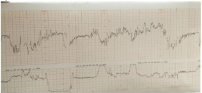
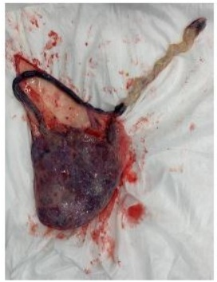
A Sangramento de origem materna, provocado por provável lesão de canal de parto devido a período expulsivo prolongado e sofrimento fetal.
B Sangramento de origem materno-fetal, causado por descolamento prematuro de placenta com necessidade de cesárea por sofrimento fetal agudo.
C Sangramento de origem fetal, causado por inserção velamentosa de cordão, ocasionando sofrimento fetal.
D Sangramento de origem materna, causado por descolamento prematuro de placenta com necessidade de cesárea por sofrimento fetal agudo.
E Sangramento de origem materno fetal, devido a provável rotura uterina em local de cicatriz previa de cesárea.
Questão 21 · Taquicardia Supraventricular TSV · 4000185953Pré-escolar, sexo feminino, 4 anos de idade, apresenta quadro de tosse e febre há 1 dia. Hoje mãe notou que ela estava mais prostrada e reclamando de dor torácica, então resolveu levá-la ao pronto atendimento. Na triagem, notado frequência cardíaca de 234 bpm, sendo encaminhada diretamente à sala de emergência. Na avaliação, apresenta pulso central presente e ritmo respiratório regular. Apresenta vias aéreas pérvias, frequência respiratória de 26 irpm, saturação de oxigênio de 96%. Oferecido oxigênio em máscara não-reinalante, com aumento da saturação para 100%. Obtido acesso venoso e instalada monitorização, com frequência cardíaca de 228 bpm, pressão arterial de 80 x 58 mmHg. Pulsos periféricos nos e rápidos, tempo de enchimento capilar de 2 segundos, glicemia capilar de 98 mg/dL. Aplicado gelo em face, sem mudança dos parâmetros. Realizado eletrocardiograma conforme imagem abaixo. Assinale a alternativa que contém a melhor opção para continuidade das condutas preconizadas:
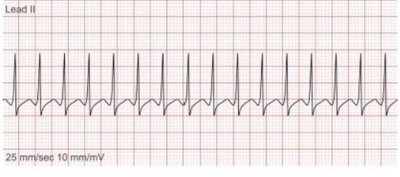
A Administrar adenosina endovenosa.
B Iniciar compressões torácicas.
C Realizar desfibrilação.
D Infundir soro fisiológico 20 mL/kg.
E Transferir para serviço cardiológico de referência.
Questão 22 · Reações adversas · Evolução da lesão · 4000185952Lactente, 2 meses de idade, sexo masculino, está em consulta ambulatorial de rotina. Nascido de termo, alimentado por seio materno exclusivo, sem intercorrências até o momento. Pais estão preocupados com a cicatriz de BCG, que se apresenta conforme imagem abaixo. Nega outras queixas. Peso e estatura Z +1 nas curvas da OMS. O exame da criança não apresenta alterações clínicas. Para este caso está indicado:
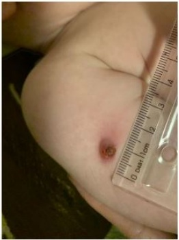
A Realizar prova tuberculínica.
B Iniciar quimioprofilaxia com isoniazida.
C Solicitar coleta de BAAR no suco gástrico.
D Manter seguimento clínico de rotina.
E Investigar imunodeficiência celular.
Questão 23 · Imunoglobulina contra raiva · Indicações · Celulite · 4000185951Escolar, sexo masculino, 6 anos de idade, sem comorbidades, apresenta ferimento em face após mordida de cachorro. Trata-se de animal doméstico da família, refere estar vacinado adequadamente. Mãe tirou fotogra a do dia do acidente (imagem 1) há 3 dias, quando foi realizado primeiro atendimento médico, sendo realizada sutura e orientado apenas uso de analgésico (dipirona) se necessário. Hoje a criança retorna, pois mãe acha que houve piora da lesão, com edema e hiperemia palpebral, com muita di culdade de abrir o olho (imagem 2), além de febre de até 38,7ºC há 1 dia. Ao verificar a caderneta de vacinação, nota-se que ele recebeu 5 doses da vacina DPT, sendo a última dose administrada aos 4 anos de idade. Frente a evolução clínica do paciente, e levando em consideração as orientações de pro laxia de tétano e de raiva humana preconizadas pelo Ministério da Saúde, a conduta indicada no caso é: Imagem 1: primeiro atendimento Imagem 2: três dia depois do acidente
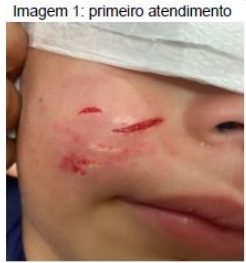
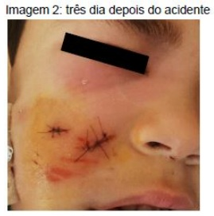
A Liberação para casa com cefalexina oral; reforço vacinal imediato para tétano; aplicar 5 doses de vacina antirrábica (dias 0, 3, 7, 14 e 28) associado a soro antirrábico.
B Abertura dos pontos para drenagem sem necessidade de antibiótico; uma dose de imunoglobulina ou soro antitetânico; observar possíveis sintomas do animal nos 10 dias seguintes ao acidente (considerar esquema profilático vacina antirrábica nos dias 0 e 3).
C Prescrição de antibiótico tópico (mupirocina); aplicação de vacina antitetânica e uma dose de imunoglobulina ou soro antitetânico; aplicar 5 doses de vacina antirrábica (dias 0, 3, 7, 14 e 28) associado a soro antirrábico.
D Aplicação de compressas frias, sem necessidade de antibioticoterapia; duas doses de vacina antitetânica com intervalo de 30 dias; observar possíveis sintomas do animal nos 10 dias seguintes ao acidente (considerar esquema profilático vacina antirrábica nos dias 0 e 3).
E Internação hospitalar com amoxicilina com clavulanato; sem necessidade de reforço vacinal ou qualquer outra medida para tétano; observar possíveis sintomas do animal nos 10 dias seguintes ao acidente (considerar esquema profilático vacina antirrábica nos dias 0 e 3).
Questão 24 · Distúrbios Nutricionais · Tratamento · 4000185948Lactente, sexo masculino, 1 mês de vida, está em consulta de puericultura. Família traz resultado da triagem neonatal (teste do pezinho), sendo que a dosagem de tripsina imunorreativa (IRT) foi de 92,0 ng/mL (normal: até 70 ng/mL). Se a condição pesquisada neste exame se confirmar, estará indicado, entre outras medidas:
A Prescrição de ácido fólico e antibiótico profilático.
B Administração diária de levotiroxina.
C Suspensão do leite materno.
D Suplementação de vitaminas K, D, A e E.
E Proibição do uso de medicamentos como a dipirona.
Questão 25 · Causas de alcalose respiratória · Alcalose respiratória · 4000185947Lactente, 4 meses de idade, sexo masculino, está em investigação de baixo ganho ponderal. Entre outros exames, foi colhida gasometria arterial, com o seguinte resultado: Qual é a causa mais provável do distúrbio gasométrico encontrado?
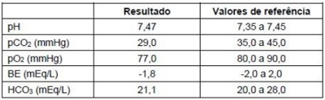
A Desidratação grave por diarreia.
B Hiperventilação por choro na coleta.
C Depressão respiratória por sedação.
D Vômitos incoercíveis por intoxicação.
E Insuficiência renal aguda pós-renal.
Questão 26 · Herpangina Doença MãoPéBoca · 4000185938Lactente, 1 ano e 10 meses de idade, sexo feminino, sem comorbidades, apresenta quadro de febre de até 38,3ºC e diarreia iniciados há 2 dias. Há um dia, surgiram lesões hiperemiadas na pele, distribuídas em todo o corpo, mais intensas nas palmas das mãos e plantas dos pés, conforme imagens abaixo. Tendo em vista a etiologia dos achados, assinale a alternativa que contém duas possíveis complicações do quadro apresentado.
A Artrite e panencefalite esclerosante subaguda.
B Aneurisma de artérias coronárias e trombose.
C Exantema após uso de beta-lactâmicos e anemia.
D Miocardite aguda e meningite asséptica.
E Rotura esplênica e anemia hemolítica.
Questão 27 · Conduta · Mães inadequadamente tratadas · 4000185937Recém-nascido, sexo masculino, 4 dias de vida, nascido de termo, parto vaginal sem intercorrências. Está internado na Unidade de Cuidados intermediários recebendo penicilina cristalina para tratamento de sí lis congênita. O diagnóstico da sí lis materna foi realizado no terceiro trimestre de gestação, com VDRL de 1/64, sendo que a mãe recebeu 2 doses de penicilina benzatina, a última dose recebida uma semana antes do parto. No momento do parto, mãe com VDRL de 1/32, RN com VDRL de 1/16. Na internação, colhidos os seguintes exames da criança: líquor com 12 células/mm³, proteinorraquia de 48 mg/dL, VDRL do líquor negativo, fundo de olho normal, potencial evocado auditivo normal, hemograma e radiogra a de ossos longos normais. Hoje, a criança perdeu acesso venoso, realizadas diversas tentativas de nova punção venosa para continuar o tratamento com penicilina cristalina, sem sucesso. A mãe refere que aceita qualquer alternativa terapêutica, seja oral ou intramuscular, mas que não vai permitir novas tentativas de punção. Frente ao desejo da mãe e baseado no quadro clínico da criança e no Protocolo Clínico e Diretrizes Terapêuticas para Prevenção da Transmissão Vertical de HIV, Sí lis e Hepatites Virais, do Ministério da Saúde, qual é a melhor abordagem?
A Trocar o tratamento atual para penicilina procaína intramuscular até completar 10 dias de tratamento.
B Acionar conselho tutelar para tratamento compulsório da criança, tendo em vista a ausência de alternativas terapêuticas e o risco de sequelas a longo prazo.
C Aplicar penicilina benzatina intramuscular em dose única e alta hospitalar com nova dosagem de VDRL em 15 dias.
D Interromper o tratamento, dar alta hospitalar e realizar nova coleta de VDRL em 1 mês. Se VDRL ainda positivo, reinternar para tratar.
E Trocar o tratamento atual para sulfametoxazol-trimetropim via oral, aumentando o tempo de tratamento para 14 dias.
Questão 28 · Massagem cardíaca · 4000185936Recém-nascido de 36 semanas de idade gestacional, não portador de cardiopatia congênita, acaba de nascer de parto vaginal em apneia e hipotônico. Foi levado a berço aquecido, secado e estimulado, aspiradas as vias aéreas, mas se mantém hipotônico, com respiração irregular e frequência cardíaca abaixo de 100 bpm, sendo optado por iniciar ventilação com pressão positiva (VPP) com dispositivo bolsa-valva-máscara. Após 30 segundos de VPP, mantém frequência cardíaca abaixo de 60 bpm, sendo optado pela VPP por meio da cânula traqueal, sendo que ainda mantém frequência cardíaca inferior a 60 bpm. De acordo com as Diretrizes de Reanimação Neonatal da Sociedade Brasileira de Pediatria, neste momento estará indicada a massagem cardíaca que deve ser realizada da seguinte forma:
A 3 ventilações para 1 compressão torácica.
B 3 compressões torácicas para 1 ventilação.
C 15 compressões torácicas para 2 ventilações.
D 30 compressões para 2 ventilações torácicas.
E Compressões torácicas a 100 a 120 vezes/min associado a 1 ventilação a cada 3 segundos.
Questão 29 · Maturação sexual · Maturação sexual no sexo f eminino · 4000185935Em relação aos estágios maturacionais de Tanner, a menarca mais frequentemente ocorre na adolescente que está no:
A M1.
B M2.
C M3.
D M4.
E M5.
Questão 30 · Tratamento · Quadro clínico · Osteoartrite OA · 4000185934Uma paciente de 77 anos com antecedentes pessoais de hipertensão arterial sistêmica, diabetes mellitus tipo 2, obesidade grau 1, dislipidemia e hipotireoidismo procura consulta médica por dor nas mãos há 20 anos, com limitação física associada. No exame clínico apresenta sinais de sinovite em metacarpofalangeanas e a seguinte alteração: Qual melhor estratégia terapêutica para essa paciente?
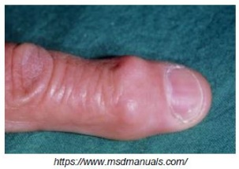
A Metotrexato.
B Cetoprofeno.
C Tramadol.
D Cirurgia.
E Diclofenaco tópico.
Questão 31 · Trombolítico · Ecodopplercardiograma · Tratamento · 4000185933Você está de plantão na Sala de Emergência e uma paciente de 36 anos sem comorbidades é trazida pela equipe de extra hospitalar após episódio de parada cardiocirculatória. Paciente foi assistida conforme protocolo do ACLS, não foi administrado choque pelo DEA e apresentou retorno à circulação espontânea após terceiro ciclo de reanimação cardiopulmonar. Durante a avaliação inicial, paciente encontra-se com PA 60x30 mmHg; FC 145bpm, extremidades frias e com livedo reticular. O restante do exame clínico não apresenta alterações. ECG com ausência de supradesnivelamento de ST. O POCUS realizado para investigação revela a seguinte imagem no paraesternal eixo curto: Qual dentre as medicações abaixo apresenta melhor indicação para essa paciente nesse momento?
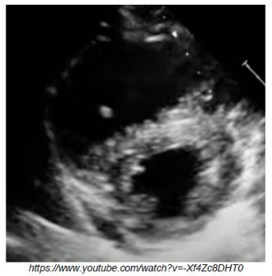
A Ticagrelor.
B Naloxone.
C Alteplase.
D Soro fisiológico.
E Ácido acetilsalicílico.
Questão 32 · Hemorragia Subaracnoidea HSA · Tratamento Clínico · Tratamento · 4000185932Paciente feminina de 56 anos de idade, tabagista atual, procura Pronto-Socorro por cefaleia há 4 dias evoluindo há 1 dia com visão dupla e sonolência. Exame clínico com PA 146x84 mmHg, GCS (Glasgow Coma Scale) 14 e paralisia do III nervo craniano à esquerda. Solicitada tomogra a computadorizada de crânio que revelou imagem abaixo. Qual das medicações deve ser prescrita para essa paciente?
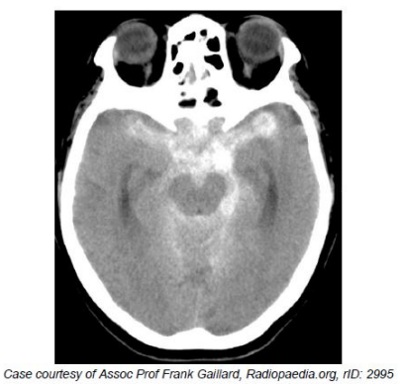
A Alteplase.
B Fenitoina.
C Nimodipino.
D Nitroprussiato de sodio.
E Atorvastatina.
Questão 33 · Distúrbio ventilatório obstrutivo · Espirometria · 4000185931Paciente masculino de 77 anos em seguimento no ambulatório de Clínica Médica por dispneia progressiva há 7 anos associada a tosse seca. Atualmente apresenta dispneia para andar menos de 100 metros no plano. Dentre os antecedentes pessoais relevantes tem hiperplasia prostática benigna e é ex-tabagista 40 anos-maço. Exame clínico evidencia SpO2 94% e sibilos esparsos. Radiogra a de tórax abaixo. Na última consulta foi solicitada uma prova de função pulmonar simples e iniciado broncodilatador de curta duração, sem melhora clínica evidente. Qual o diagnóstico espirométrico desse paciente?

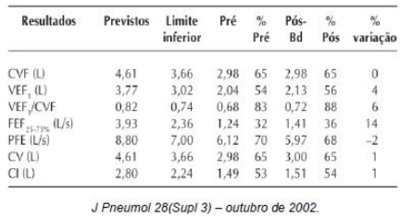
A Distúrbio ventilatório obstrutivo moderado.
B Distúrbio ventilatório obstrutivo leve.
C Distúrbio ventilatório obstrutivo acentuado.
D Distúrbio restritivo.
E Redução proporcional de VEF1 e CVF.
Questão 34 · Terapia f armacológica · Broncodilatadores · 4000185930Paciente masculino de 77 anos em seguimento no ambulatório de Clínica Médica por dispneia progressiva há 7 anos associada a tosse seca. Atualmente apresenta dispneia para andar menos de 100 metros no plano. Dentre os antecedentes pessoais relevantes tem hiperplasia prostática benigna e é ex-tabagista 40 anos-maço. Exame clínico evidencia SpO2 94% e sibilos esparsos. Radiogra a de tórax abaixo. Na última consulta foi solicitada uma prova de função pulmonar simples e iniciado broncodilatador de curta duração, sem melhora clínica evidente. Qual tratamento farmacológico mais apropriado para esse paciente?
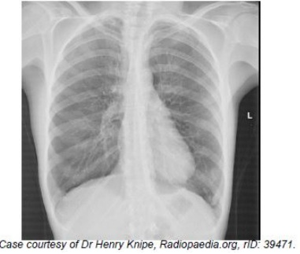
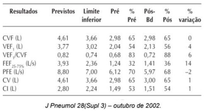
A Budesonida inalatória.
B Formoterol e Budesonida inalatórios.
C Prednisona oral.
D Roflumilaste oral.
E Tiotrópio inalatório.
Questão 35 · Agonistas de receptor de GLP1 · Medicações com ef eito incretínico · 4000185929Paciente feminina de 65 anos procura consulta médica ambulatorial para controle de Diabetes mellitus tipo 2 (DM2). Além do diabetes, apresenta Hipotireoidismo, infecções de trato urinário de repetição e Neuralgia pós-herpética. Para o DM2, está em uso de Metformina 500 mg 3x dia, com boa tolerância à medicação e em programa de mudança de estilo de vida. Ao exame clínico apresenta IMC (índice de massa corpórea) de 34 Kg/m² . Exame laboratorial com HbA1C (hemoglobina glicada) de 7.5%. Qual das medicações abaixo é melhor indicada para essa paciente?
A Insulina longa duração.
B Liraglutida.
C Dapaglifozina.
D Glimepirida.
E Insulina curta duração.
Questão 36 · Calendários especiais · 4000185928Paciente masculino, 42 anos, procura atendimento médico para consulta de promoção de saúde. Apresenta histórico médico de infecção por HIV e está em tratamento há 6 anos, sem intercorrências. No momento está em uso de Lamivudina, Tenofovir e Dolutegravir e traz exames laboratoriais com CD4 de 480/ alternativas abaixo referentes à vacinação desse paciente, qual a correta?
A Esse paciente pode receber todas as vacinas do calendário vacinal.
B Esse paciente não pode receber a tríplice viral (sarampo, caxumba e rubéola).
C Esse paciente não pode receber a Pneumocócica 13V.
D Esse paciente não pode receber a Meningite ACWY.
E Esse paciente não pode receber a Febre Amarela.
Questão 37 · Cardioversão elétrica · Critérios para escolha da estratégia terapêutica · 4000185927Mulher de 42 anos de idade é admitida na sala de emergência por palpitações há 2 horas. Monitorização cardíaca evidenciou a presença de taquiarritmia de QRS estreito e regular. Não apresentava sintomas de síncope, dispneia ou dor torácica. Seu exame clínico era normal, com exceção da frequência cardíaca elevada. Optado pelo plantonista em realizar adenosina 6 mg com o registro eletrocardiográfico abaixo: Após o registro, paciente retorna ao ritmo inicial taquicárdico e mantém-se assintomática e sem alterações em relação ao exame clínico inicial. Qual o próximo passo na gestão de cuidado nesta paciente?
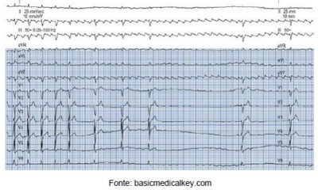
A Adenosina 12 mg.
B Sedação e cardioversão com 50 J.
C Sedação e cardioversão com 200 J.
D Realização de manobra vagal.
E Amiodarona 300 mg em bolus.
Questão 38 · Diagnóstico · 4000185926Homem de 19 anos de idade procura Pronto-Socorro por quadro de febre e mialgia há 4 dias. Nega sintomas respiratórios ou dor abdominal. Relata infecção por dengue há 6 meses com evolução benigna. Ao exame clínico levemente desidratado, Pressão Arterial 110x80 mmHg, frequência cardíaca 98 bpm, exame pulmonar e abdominal sem alterações. Exames laboratoriais revelaram: Hb = 11,7g/dL; Leucócitos = 2.100/mm³ ; Linfócitos = 450/mm3 ; Plaquetas = 70.000/mm³ ; Dengue NS1 rápido = negativo; Sorologia Dengue IgG = positivo; Sorologia Dengue IgM = negativo. O que se pode a rmar em relação ao diagnóstico de Dengue?
A Está confirmado o diagnóstico de Dengue.
B Deve-se repetir a sorologia IgM em dois dias.
C Deve-se repetir o NS1 em dois dias.
D Deve ser solicitada imediatamente isolamento viral por RT-PCR.
E Está afastado o diagnóstico de dengue.
Questão 39 · Tireoidites subagudas · Tireotoxicose por destruição de f olículos tireoidianos · 4000185925Mulher de 32 anos de idade relata diagnóstico de SARS-CoV2 há 6 semanas com resolução dos sintomas respiratórios, porém, com persistência e piora progressiva de quadro de dor de garganta. Nega odinofagia, relata presença de diarreia e insônia na última semana. Ao exame clínico: Pressão Arterial 138x72 mmHg, frequência cardíaca 110 bpm, dor relatada reprodutível à palpação da tireoide que se encontra difusamente aumentada, sem nodulações. Realiza exames laboratoriais que revelam: TSH = 0,12 mUI/L; T4 livre = 2,5 ng/dL; VHS = 56 mm/h. Realizou cintilogra a de tireoide com Tecnécio que revelou baixa captação homogênea. Qual o tratamento indicado?
A Naproxeno.
B Metimazol.
C Propiltiouracil.
D Levotiroxina.
E Amoxicilina.
Questão 40 · Avaliação Inicial · Trauma Abdominal e Pélvico · 4000185924Homem de 23 anos apresenta fratura pélvica em “livro aberto”. Qual é a conduta inicial?
A Lençol ou cinta pélvica.
B Laparotomia exploradora.
C Tamponamento pélvico.
D Angiografia.
E Fixação externa da bacia.
Questão 41 · Escala de Coma de Glasgow · Escala de Coma de Glasgow · 4000185923Paciente é trazido ao Pronto-Socorro após traumatismo crânio-encefálico. Emite sons incompreensíveis, não tem abertura ocular e reage à dor em decorticação. Qual é a pontuação na escala de coma Glasgow?
A 0.
B 3.
C 6.
D 9.
E 11.
Questão 42 · Risco Cirúrgico · Avaliação de Risco · Princípios da Anestesiologia · 4000185922Mulher, 74 anos, apresenta hérnia crural l esquerda redutível há cerca de um ano. Deseja ser operada para correção do defeito herniário. Ao realizar sua história clínica e exame físico, qual desses dados pode impedir o agendamento de procedimento eletivo?
A Diabetes mellitus.
B Tabagismo contínuo.
C Revascularização miocárdio prévia.
D Infecção por COVID-19 há 30 dias.
E Estase jugular.
Questão 43 · Tratamento das Hérnias Femorais · Epidemiologia · Exame Físico e Complementar · 4000185921Mulher, 74 anos, apresenta hérnia crural l esquerda redutível há cerca de um ano. Deseja ser operada para correção do defeito herniário. Qual a afirmação correta relacionada ao quadro clínico?
A Esse defeito herniário é mais comum no sexo masculino.
B O diagnóstico diferencial deve incluir linfadenomegalia.
C A correção por via laparoscópica só deve ser considerada em caso de recidiva.
D A técnica de hernioplastia a Lichtentein é a mais resolutiva nesse caso.
E O reforço da fáscia transversalis é fundamental anatomicamente.
Questão 44 · Classif icação · Características gerais · Diagnóstico · 4000185920Homem, 49 anos, comparece ao pronto atendimento com queixa de disúria, polaciúria e dor em região perineal há 15 dias. Há 1 dia refere febre não aferida. O toque retal revela dor na face anterior do reto. O exame de urina tipo I revela leucocitúria. Qual o diagnóstico mais provável?
A Pielonefite.
B Hiperplasia prostática benigna.
C Prostatite.
D Cistite.
E Nefrolitiase complicada.
Questão 45 · Diagnóstico · Úlcera péptica Perf urada · Manif estações Clínicas e Exame Físico · 4000185919Homem, 50 anos, com diagnóstico prévio de celulite em membro inferior direito há 1 semana, em tratamento com cefalexina e AINEs para analgesia. Procura Pronto-Socorro com dor abdominal intensa em região superior do abdome de forte intensidade de início há 48 horas associado a distensão abdominal, anorexia e náuseas. Nega febre, nega vômitos, nega alterações em evacuação, nega alterações urinárias. Exame Físico: REG, Descorado 1/4, anictérico, acianótico, MV+, s/RA; Abdome globoso; timpânico; RHA+; distendido, tenso, dor difusa à palpação super cial e profunda, descompressão brusca positiva na região supraumbilical. Sinal de Jobert positivo. Qual o diagnóstico mais provável?
A Colecistite aguda litiásica.
B Isquemia mesentérica aguda.
C Úlcera péptica perfurada.
D Doença inflamatória intestinal.
E Pileflebite esplênica.
Questão 46 · Apresentação Clínica · Oclusão Arterial Crônica OAC · Diagnóstico · 4000185918Homem, 49 anos, tabagista 30 maços ano, vem ao pronto atendimento com quadro de claudicação em membros inferiores há cerca de 3 meses, com piora progressiva. Há 15 dias notou também dor em região lombar e nádegas, associado a piora da disfunção erétil. Assinale o diagnóstico mais provável:
A Síndrome de Leriche.
B Aneurisma de aorta.
C Trombose da ilíaca interna.
D Síndrome de Buerger.
E Síndrome de Takayasu.
Questão 47 · Paraf imose · 4000185917Menino de 3 anos é trazido pela mãe com quadro de edema em glande há 6 horas, após tentativa de retração parcial do prepúcio. Há sinais de congestão venosa e a dor é intensa, deixando a criança irritada e pouco colaborativa. Qual é o diagnóstico e a conduta mais adequados?
A Parafimose - drenagem por punção da glande e redução prepúcio.
B Fimose - postectomia de urgência sob anestesia geral.
C Fimose - frenulotomia descompressiva.
D Fimose - secção longitudinal prepúcio sob analgesia.
E Parafimose - tentativa de redução incruenta sob anestesia geral.
Questão 48 · Diagnóstico · Apresentação Clínica · Enterocolite Necrosante · 4000185916Recém nascido de 28 semanas, em unidade de terapia neonatal, desenvolve no quinto dia de vida distensão abdominal e queda do estado geral, sendo necessário suporte ventilatório mecânico e passagem de sonda nasogástrica, que apresenta alto débito. Evolui com acidose metabólica e bacteremia. Qual é o achado radiológico que confirma a principal hipótese diagnóstica?
A Dupla bolha epigástrica.
B Pneumatose intestinal.
C Ausência de bolha gástrica.
D Distensão gástrica volumosa.
E Ausência de gás no lado direito.
Questão 49 · Queimaduras e Trauma Elétrico · Manejo Hospitalar · Atendimento Inicial às Vítimas de Queimadura · 4000185915Criança de 4 anos é trazida pelo pai ao pronto atendimento, com queimadura em face anterior de coxa direita causada pelo derramamento de soda cáustica. Está bastante assustada e chorosa, referindo dor local intensa. Qual é a melhor maneira de tratar a ferida neste momento? Respostas: 1 12 23 34 45
A Neutralização do agente com solução ácida.
B Empastamento com sulfadiazina de prata.
C Aquecimento local com compressas de água quente.
D Limpeza com solução salina abundante.
E Aplicação de corticosteroide tópico.